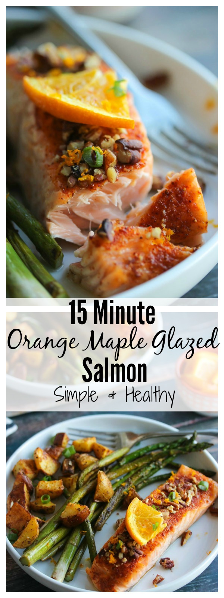

Orange Maple Salmon Recipe

Salmon doesn't always have to be boring! this orange and maple glaze will bring a new life to the kind of salmon you are used to eating. Total time to make this
dish is 15 minutes, so it is super easy to make and almost anyone can do it with just a few ingredients.
Ingredients
- 1 lb wild salmon sliced into 2-3 fillets
- 2 tsp garlic powder
- 3/4 tsp smoked paprika
- 1/4 tsp sea salt
- Pinch black pepper
- 1 tbsp pure maple syrup
- Juice of 1/2 orange ~2 tbsp + zest for topping
- 3 tbsp crushed pecans
Directions
- Place oven on broil
- Prepare dry rub by mixing garlic powder, smoked paprika, salt and pepper.
- Pat salmon dry with a paper towel and rub dry mix evenly over each fillet
- Place salmon on a foil-lined baking sheet (skin down) and broil for 5 minutes.
- Combine maple syrup and orange juice in a small bowl. After salmon broils for 5 minutes,
brush maple orange juice over each fillet and top with crushed pecans. Return to oven for another 3 minutes.
- Top with fresh orange zest and serve!